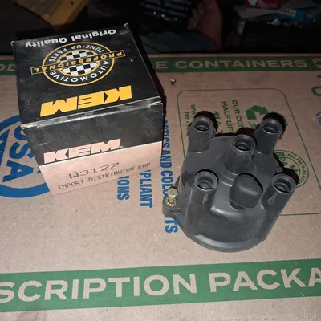
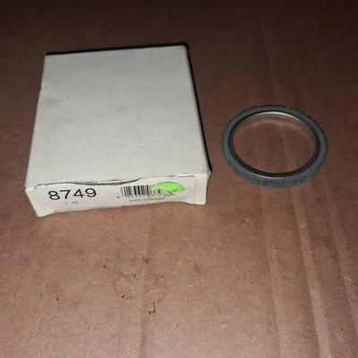
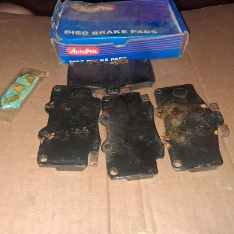
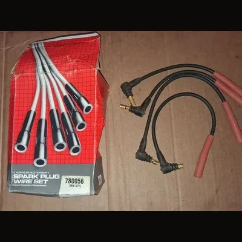
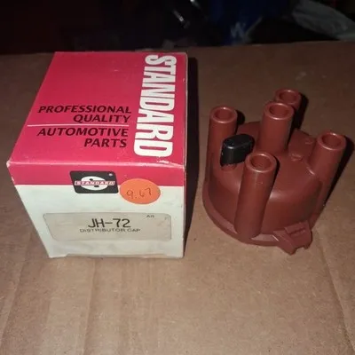
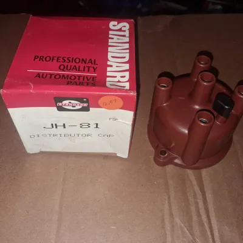
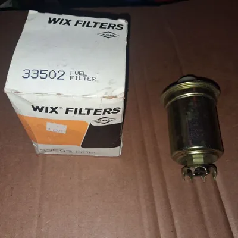

Distributor Cap
1971-1987 KEM W396X Distributor Cap Subaru Standard Toyota Corolla Corona Pickup
W396X
Fits 1971-1979 Toyota Corolla · 1975-1978 Toyota Corona (161 listed)
$14.99
View details43 parts whose listing names at least one Toyota vehicle, mostly ignition & tune-up, air filters and engine parts. Fit depends on year, model and engine, so check the full vehicle list on each part page or message us before you buy.
43 parts
Online checkout through Square. Ships from Carbondale, PA, or pick up by confirmed appointment only. Fitment question? Message us.
W396X
Fits 1971-1979 Toyota Corolla · 1975-1978 Toyota Corona (161 listed)
$14.99
View details
W296
Fits 1981-1984 Toyota Celica · 1981-1988 Toyota Pickup (179 listed)
$12.99
View details
W2002
Fits 1988-1997 Toyota Corolla · 1988-1995 Toyota MR2 (340 listed)
$14.99
View details
W3502W
Fits 1987-1989 Toyota Tercel
$26.99
View details
W3127
Fits 1993-1995 Toyota 4Runner · 1993-1995 Toyota Pickup (14 listed)
$19.99
View details
TF-206
Fits Toyota
$24.99
View details
AP-8724
Fits 2005-2015 Toyota Tacoma · 1978-1981 Datsun 510 (241 listed)
$18.99
View details
8749
Fits 2013-2016 Toyota Corolla · 2013-2016 Toyota Tacoma
$16.99
View details
3-7298
Fits 1990-2002 Toyota 4Runner · 1989-1995 Toyota Pickup (277 listed)
$29.99
View details
045-0253
Fits 1983-1985 Toyota Corolla · 1991-1996 Ford Escort (78 listed)
$12.99
View details
175-4407
Fits 1984-1988 Toyota 4Runner · 1968-1973 Saab 95 (77 listed)
$24.99
View details
13356Q
Fits 2001-2005 Toyota RAV4 (11 listed)
$14.99
View details
14126
Fits 1988-2000 Toyota Camry · 1988-1993 Toyota Celica (207 listed)
$12.99
View details
14133
Fits 2000-2008 Toyota Camry · 2000-2007 Toyota Avalon (14 listed)
$12.99
View details
16115
Fits 2008-2014 Toyota Highlander · 2005-2009 Buick Allure (881 listed)
$14.99
View details
H2108
Fits 2003-2009 Toyota 4Runner · 1967-1981 Toyota Corona (3000 listed)
$12.99
View details
780056
Fits 1983-1988 Toyota Corolla · 1985-1988 Chevrolet Nova (73 listed)
$29.99
View details
33198
Fits 1986-1987 Toyota 4Runner · 1970-1988 Toyota Pickup (262 listed)
$14.99
View details
33199
Fits 1986-1987 Toyota 4Runner · 1970-1988 Toyota Pickup (262 listed)
$14.99
View details
33708
Fits 1983-2000 Toyota Corolla · 1996-2000 Toyota RAV4 (147 listed)
$25.99
View details
CD70
Fits 1983-1988 Toyota Corolla · 1980-1988 Toyota Tercel (140 listed)
$26.99
View details
W292X
Fits 1971-1979 Toyota Corolla · 1971-1973 Toyota Carina (453 listed)
$13.99
View details
W363
Fits 1985-1988 Toyota Corolla · 1983-1988 Toyota Tercel (72 listed)
$21.99
View details
W399X
Fits 1981-1983 Toyota Celica · 1981-1982 Toyota Corona (37 listed)
$15.99
View details
CV8448
Fits 1989-1991 Toyota Camry · 1986-1994 Ford Taurus (278 listed)
$22.99
View details
66673
Fits 2005-2006 Toyota Camry · 2006-2013 Toyota Highlander (71 listed)
$21.99
View details
66834
Fits 2003-2008 Toyota Corolla · 2003-2008 Toyota Matrix (43 listed)
$18.99
View details
67041
Fits 2008-2016 Toyota Land Cruiser · 2008-2016 Toyota Sequoia (228 listed)
$12.99
View details
67064
Fits 2010-2017 Toyota Camry · 2009-2019 Toyota Corolla (144 listed)
$12.99
View details
69104
Fits 2009-2019 Toyota Corolla · 2017-2018 Toyota Corolla iM (251 listed)
$21.99
View details
69223
Fits 2011-2013 Toyota Venza (9 listed)
$16.99
View details
JH-71
Fits 1976-1978 Toyota Celica · 1976-1979 Toyota Corolla (125 listed)
$16.99
View details
JH-72
Fits 1976-1979 Toyota Corolla · 1976-1978 Toyota Celica (155 listed)
$21.99
View details
JH-81
Fits 1984-1989 Toyota 4Runner · 1980-1989 Toyota Pickup (140 listed)
$17.99
View details
JH-98
Fits 1983-1988 Toyota Corolla · 1983-1988 Toyota Tercel (129 listed)
$24.99
View details
JR-75
Fits 1971-1979 Toyota Corolla · 1971-1973 Toyota Carina (495 listed)
$14.99
View details
JR-95
Fits 1986-1995 Toyota 4Runner · 1983-1986 Toyota Camry (227 listed)
$17.99
View details
JR101
Fits 1996-1997 Toyota 4Runner · 1987-1995 Toyota Camry (429 listed)
$17.99
View details
TS-106
Fits 1984-1993 Toyota Corolla · 1990-1991 Toyota Celica (97 listed)
$29.99
View details
Wagner Edge
Fits Toyota Camry
$39.99
View details
33502
Fits 1992-2001 Toyota Camry · 1990-1997 Toyota Celica (399 listed)
$19.99
View details
42333
Fits 1985-1992 Toyota 4Runner · 1985-1992 Toyota Cressida (6 listed)
$16.99
View details
51034
Fits 1978-1980 Toyota Celica · 1972-1974 Toyota Pickup (251 listed)
$16.99
View details